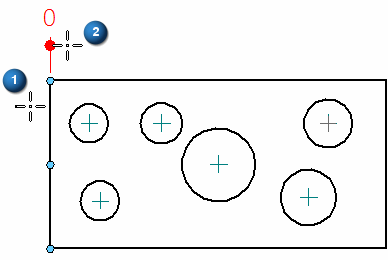
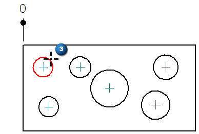
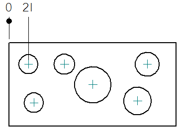
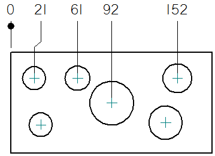
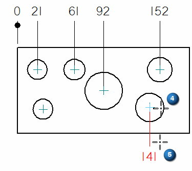
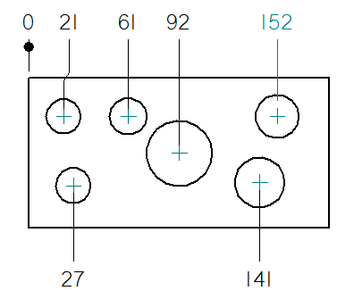
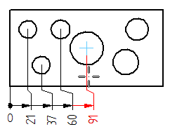

Place a coordinate dimension
-
Choose Home tab→Dimension group→Automatic Coordinate Dimension list→Coordinate Dimension
 .
. -
On the Dimension command bar, select a dimension Orientation option:
-
Horizontal/Vertical
-
Use Dimension Axis
-
Use Coordinate System
To see examples, refer to the Coordinate Dimension command.
-
-
Click an element or keypoint that you want to be the dimension origin (1).
-
Click to place the common origin (2).

-
Click the first element that you want to measure (3).

Selecting the element also places the dimension. Its text is aligned with the text of the zero dimension.

-
Continue clicking each element that you want to measure along the same side of the part.

-
To change the orientation of the next dimension placed, Alt+click the next element to measure (4). Move the cursor until the dimension text is positioned the way you want it, and then click to place it (5).

-
Finish adding the dimensions to this alignment set by clicking each element. Do not press the Alt key unless you want to start a new alignment set.

-
To use a different origin element for additional dimensions, right-click to restart the command. Here, the coordinate dimensions reference three different origin points.

-
You can add jogs when placing coordinate dimensions when the Enable automatic jogging option is selected on the Lines and Coordinate tab of the Dimension Style or Dimension Properties dialog boxes.

-
You can set options on the Lines and Coordinate tab in the dimension style to allow negative values and to allow the origin value to change to a nonzero value.
-
You can add or remove a jog on an existing coordinate dimension. Choose the Select command, and then hold the Alt key as you click.
-
You can remove all the jogs on an existing coordinate dimension using the Jog button on the Dimension command bar.
-
You can display a coordinate system in the drawing view and use the coordinate system axes to determine the dimension line alignment. See Place a coordinate dimension using a coordinate system.
How do I
Place coordinate dimensions automaticallyPlace a coordinate dimension using a coordinate system
Place an angular coordinate dimension
Place coordinate dimensions between drawing views
Change the origin dimension in a coordinate dimension group
Change the coordinate origin value
Learn more
Ordinate dimensionsCoordinate dimension alignment sets
Adding and removing jogs on coordinate dimensions
Look up more details
Dimension command barCoordinate dimension handles
Automatic Coordinate Dimension command
Automatic Coordinate Dimension command bar
Keypoint Options dialog box
Coordinate Dimension command
Angular Coordinate Dimension command
Change Coordinate Origin command
Lines and Coordinate tab (Dimension Style and Dimension Properties)